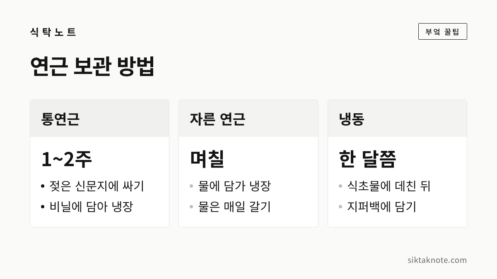
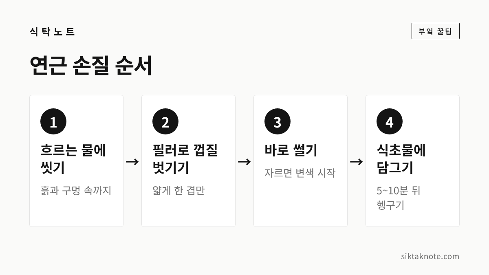
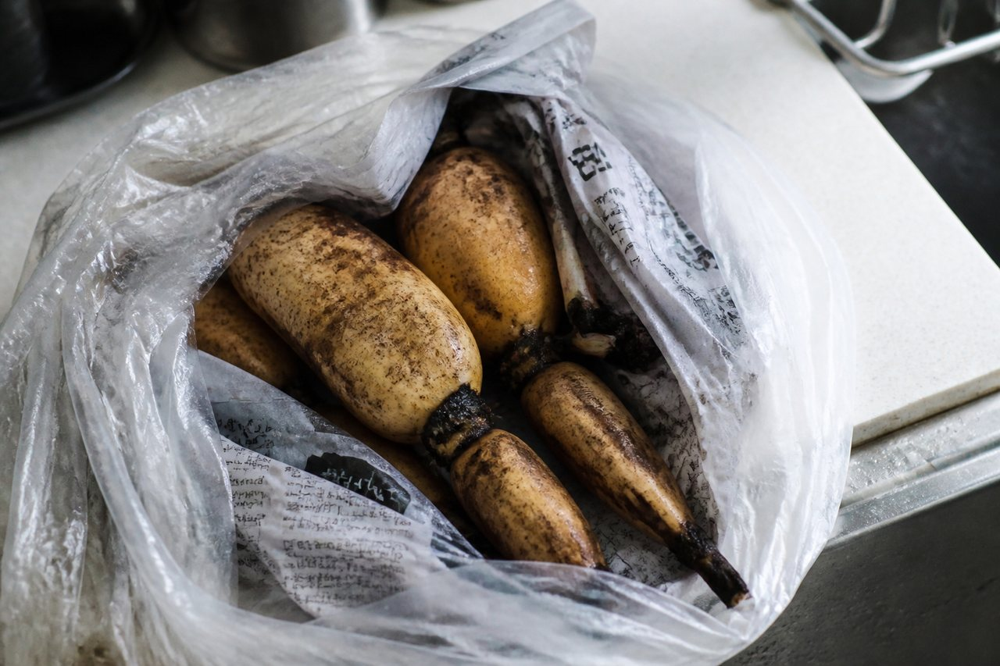
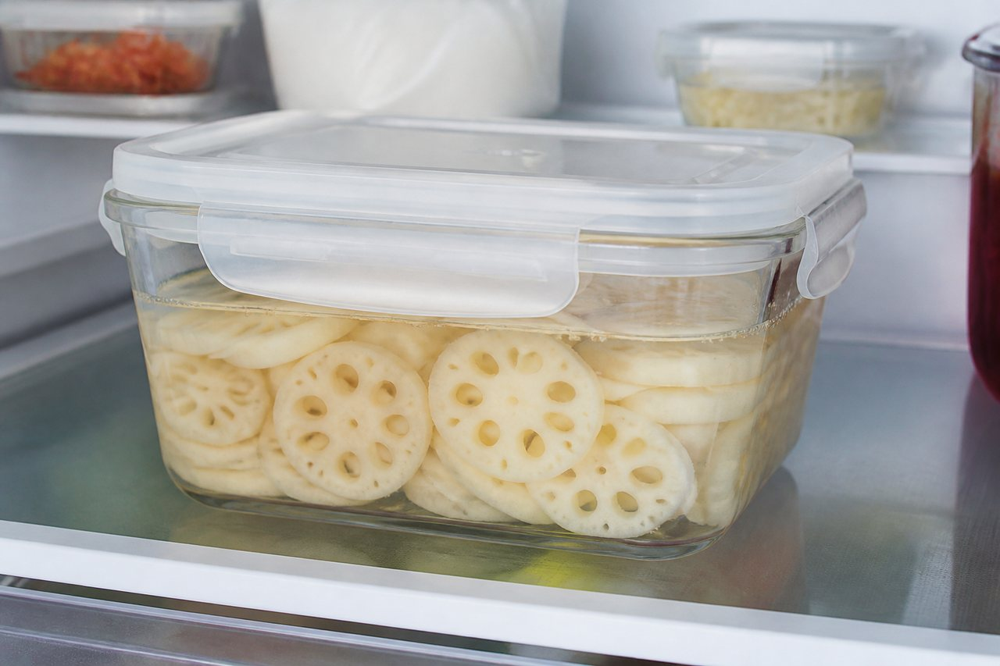

연근 손질·보관법 3가지 — 갈변 막기, 냉장, 냉동

3줄 요약
- 연근은 껍질을 벗기고 자르는 대로 식초물에 담가 두면 색이 덜 변해요.
- 흙 묻은 통연근은 젖은 신문지에 싸서 냉장하고, 자른 연근은 물에 담가 며칠 안에 씁니다.
- 오래 두려면 식초 푼 물에 살짝 데쳐 냉동하세요. 삶는 시간은 2~3분 안팎으로 소개됩니다.
연근은 껍질을 벗기고 자르는 순간부터 색이 변하기 시작하는데요. 그래서 사 온 날 어떻게 손질하고 어디에 두느냐가 맛과 식감을 좌우합니다. 오늘은 갈변 막기, 냉장, 냉동, 이 세 가지만 기억하시면 됩니다.

연근은 가을에 굵어져요
한국민족문화대백과사전은 연근을 연꽃의 땅속줄기로 설명하는데요. 가을이 되면 땅속줄기가 굵어져 연근이 된다고 합니다. 식품 전문 매체 푸드투데이는 제철을 10월부터 3월까지로 소개하고 있어요.
수확 시기는 지역과 해마다 조금씩 다릅니다. 전남 무안 회산 백련 연근을 살펴본 연구(한국지역사회생활과학회지, 2008)는 9월에도 수확할 수 있지만 수확량을 따지면 10월 중순이 더 알맞다고 보았습니다. 전북 김제 진봉면은 2010년 전북일보 보도에서 이듬해 5월 초까지 수확하겠다고 했고요. 지금이 연근을 만나기 좋은 때라는 뜻입니다.
사 올 때는 이렇게 골라요
연근은 겉만 봐서는 속을 알기 어려운데요. 공공기관과 매체가 알려 주는 기준을 모아 보면 이렇습니다.
- 손에 들었을 때 단단하고 묵직하게 꽉 찬 느낌이 나는 것
- 껍질에 흠집이 적고 색이 고른 것
- 자른 단면의 구멍 크기가 고르고, 검은색이나 갈색을 띠지 않은 것
- 구멍 안쪽에 검은 줄무늬가 있으면 신선하지 않을 수 있으니 피하는 것
국민건강보험공단 웹진(2024년 7월호)은 손질해서 파는 슬라이스 연근은 표백제 냄새가 나는지 살펴보고, 갈변 없이 흰색을 유지하는 것을 고르라고 안내합니다. 매일신문에 실린 한 기고문은 원산지를 알기 어렵고 표백했을 수 있다며 흙이 묻은 연근을 사라고 권했어요. 보관할 때도 흙이 묻은 통연근이 다루기 편합니다.
1. 껍질 벗기고 식초물에 담가 갈변 막기

연근을 흐르는 물에 씻어 흙을 털어내고, 필러로 껍질을 벗깁니다. 구멍 속에 흙이 남아 있을 수 있으니 물을 흘려 보내며 씻어 주세요. 젓가락이나 꼬치로 파내는 방법도 소개되어 있습니다.
자른 연근이 갈색으로 변하는 건 공기에 닿아서 생기는 갈변인데요. 한국민족문화대백과사전은 철이 있으면 갈변이 더 심해지니 쇠칼과 쇠냄비는 피하는 게 좋다고 설명합니다. 그래서 자르는 즉시 식초물에 담가 두는 방법이 널리 쓰여요.
식초물은 물 1리터에 식초 1큰술 정도로 만든다고 푸드투데이가 소개했습니다. 담그는 시간은 5~10분 안팎으로 안내하는 기사가 여럿 있었어요. 오래 담가 두면 연근 고유의 맛이 옅어질 수 있다고 하니, 시간이 되면 건져서 가볍게 헹구시면 됩니다. 식초가 없으면 레몬즙이나 소금물을 쓰는 방법도 소개됩니다.
식초 같은 산이 갈변을 일으키는 효소의 활동을 낮춘다고 알려져 있습니다. 국내 연구(한국식품영양과학회지, 2012)에서도 연근을 아세트산 용액에 담갔더니 갈변 효소(PPO) 활성이 낮아졌다고 해요. 다만 이 연구의 농도와 가정의 식초 한 큰술이 같은 건 아니니, 식초물은 어디까지나 색을 지키는 요령으로만 생각하세요.
2. 통연근은 신문지에, 자른 연근은 물에 담가 냉장
흙이 묻은 통연근은 씻지 말고 두는 게 좋습니다. 물을 조금 적신 신문지로 감싸 비닐봉지에 넣고, 냉장고 채소칸에 보관하세요. 푸드투데이가 소개한 방법입니다. 통풍이 잘되는 서늘한 곳에 두는 방법도 안내되는데, 요즘처럼 실내가 따뜻한 날이 있으면 냉장이 마음 편합니다.

기간은 자료마다 조금씩 달라서, 1~2주 안에 쓰시는 게 무난합니다. 푸드투데이도 장기 보관에는 한계가 있으니 빨리 먹는 게 좋다고 했어요.
이미 자른 연근은 사정이 달라요. 단면을 랩으로 싸서 냉장하거나, 썬 연근이라면 식초물에 담가 냉장하면 갈변을 막을 수 있다고 국민건강보험공단 웹진이 안내합니다. 물에 담가 둘 때는 매일 물을 갈아 주세요. 이렇게 두는 연근은 며칠 안에 쓰는 게 안전합니다.

비슷한 요령이 당근 보관법에도 나옵니다. 당근도 썬 것은 물에 담가 냉장하는데, 둘 다 잘린 면이 마르거나 변하는 걸 막으려는 거예요. 한편 냉장고에 넣지 않는 게 좋은 고구마 보관법과는 반대여서, 연근은 냉장이 기본이라고 기억해 두시면 헷갈리지 않습니다.
3. 오래 두려면 데쳐서 냉동
한 번에 다 못 먹을 양이라면 냉동이 편합니다.
- 껍질을 벗기고 조리할 모양대로 썹니다.
- 식초를 약간 넣은 끓는 물에 살짝 데쳐요.
- 건져서 식초를 푼 찬물에 바로 담갔다가 물기를 충분히 뺍니다.
- 지퍼백에 납작하게 담아 공기를 빼고 얼리세요.
데친 뒤 식초를 푼 찬물에 담그면 갈변과 쓴맛을 줄일 수 있다고 국민건강보험공단 웹진이 안내합니다. 얼린 연근은 한 달쯤 안에 쓰기를 권하는 자료가 있어요. 날짜를 적어 두고 먼저 얼린 것부터 쓰면 좋겠습니다.
해동하면 식감이 달라질 수 있으니, 얼린 채로 조림이나 볶음, 국에 넣는 걸 권합니다. 샐러드처럼 아삭함이 중요한 요리에는 냉동하지 않은 연근이 낫습니다.
삶는 시간과 아삭하게 하는 요령
연근의 매력은 아삭한 식감인데요. 오래 삶을수록 그 맛이 사라집니다. 위키트리는 끓는 물에 살짝 담가 아린 맛을 빼는 정도면 2~3분이면 충분하다고 소개했어요. 식초를 조금 넣어 삶으면 색이 희게 마무리된다고 한국민족문화대백과사전도 설명합니다.
시간은 두께에 따라 달라지니 숫자에만 매달리지 마세요. 끓는 물에 넣고 2분쯤 지났을 때 한 조각을 건져 먹어 보고, 더 익힐지 정하면 됩니다. 푸드투데이에는 식초물에 담갔다가 식초를 넣은 끓는 물에 잠깐 데치면 씹는 맛이 살아난다는 요령도 있었습니다.
연근조림과 연근전, 간단하게
데친 연근이 있으면 요리는 어렵지 않아요.
- 연근조림: 데친 연근을 간장 양념에 넣고 졸입니다. 조림은 완전히 식힌 뒤 밀폐 용기에 담아 냉장하면 4~5일쯤 맛이 유지된다고 하는데요. 국물을 조금 남겨 두면 연근이 딱딱해지는 걸 막을 수 있다고 합니다. 일주일이 지나면 풍미가 떨어질 수 있으니 소량씩 해 드세요.
- 연근전: 얇게 썰어 데친 뒤 물기를 충분히 빼고, 반죽을 입혀 부칩니다. 너무 얇으면 부서지고 너무 두꺼우면 덜 익으니, 두께를 고르게 맞추는 게 좋습니다.
이런 연근은 먹지 않습니다
껍질을 벗겨 두었다가 단면이 살짝 갈색으로 변한 정도는 공기에 닿아서 생긴 갈변일 수 있어요. 하지만 만졌을 때 물렁하거나 끈적이고, 시큼한 냄새가 나거나 곰팡이가 폈다면 드시지 마세요. 자른 단면의 구멍 안에서 검은 액체나 검은 줄무늬가 보이는 연근도 신선하지 않으니 버리시는 게 좋습니다.
자주 묻는 질문
식초물에 오래 담가 둘수록 좋은가요?
그렇지 않아요. 몇 시간씩 담그면 연근 고유의 맛이 옅어질 수 있다고 알려져 있습니다. 5~10분 정도로 충분합니다.
구멍 속 흙은 어떻게 씻나요?
흐르는 물에 씻어 흙을 제거하라고 국민건강보험공단 웹진이 안내합니다. 구멍 속 이물질은 젓가락이나 꼬치로 파내라는 방법도 소개되어 있어요. 자르고 나서 구멍 안을 살펴보면 더 확실합니다.
연근을 냉장고에서 꺼냈더니 물이 생겼어요.
신문지가 마르거나 비닐 안에 물방울이 맺혔다면 한 번 열어 신문지를 새것으로 갈아 주세요. 물이 고인 채 두면 상하기 쉽습니다.
마지막으로 기억하실 건 세 가지입니다. 자르는 즉시 식초물에 담그고, 통연근은 젖은 신문지에 싸서 냉장하고, 오래 두려면 데쳐서 냉동하세요. 뿌리채소 보관이 궁금하시다면 무 보관법도 함께 봐 두시면 좋겠습니다.